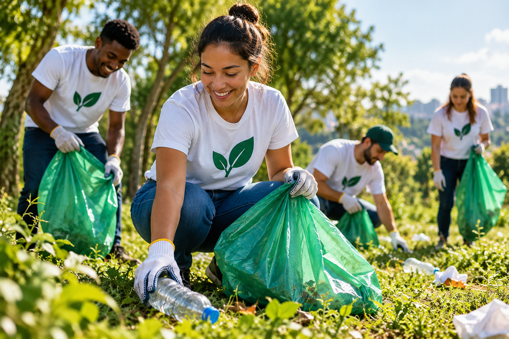
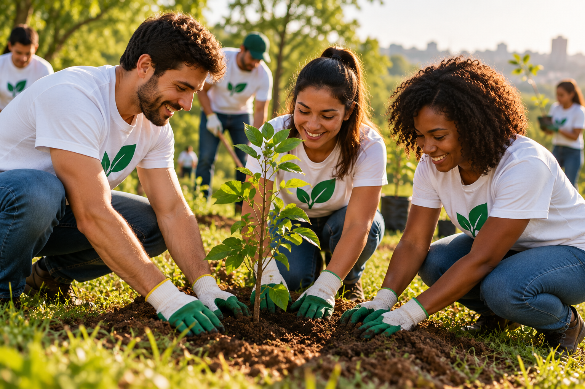
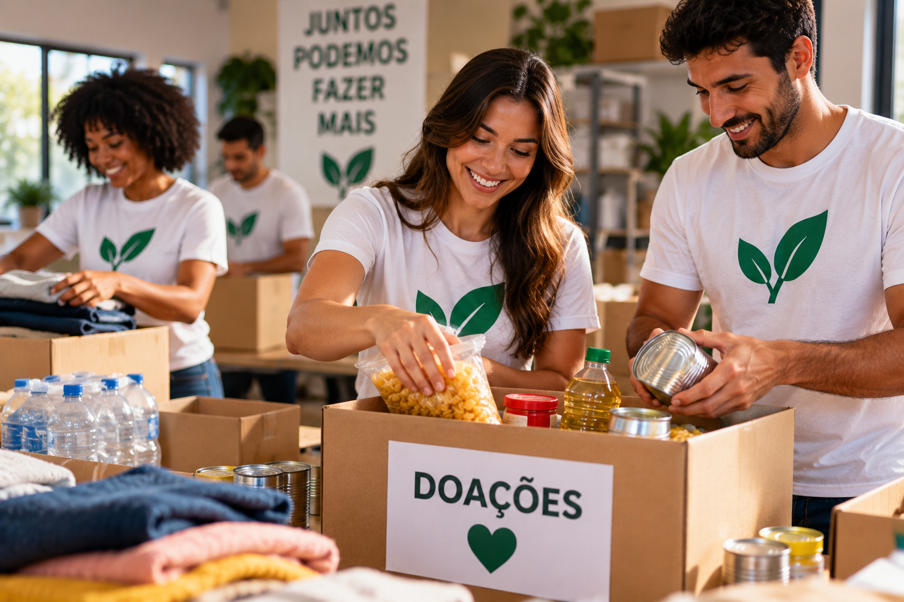

Nossos projetos
A Sustent+Ação desenvolve projetos para ajudar a comunidade, cuidar do meio ambiente e incentivar a participação de voluntários.
Projeto 1 - Ação de limpeza

O Projeto 1 reúne voluntários para realizar ações de limpeza e conservação de áreas verdes, ajudando a manter os espaços mais limpos e agradáveis para a comunidade.
Projeto 2 - Plantio de árvores

O Projeto 2 promove o plantio de árvores e incentiva a preservação do meio ambiente através da participação da comunidade.
Projeto 3 - Campanha de doações

O Projeto 3 realiza campanhas para arrecadar alimentos, roupas e outros materiais que podem ajudar pessoas que precisam.
Como participar
Você pode ajudar participando como voluntário ou contribuindo com uma doação para os nossos projetos.
Quero participar